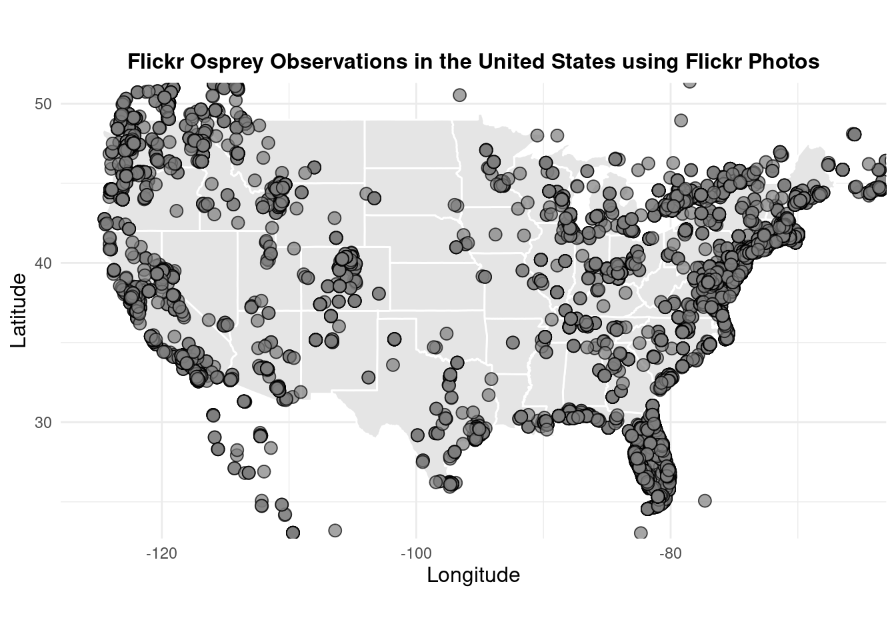
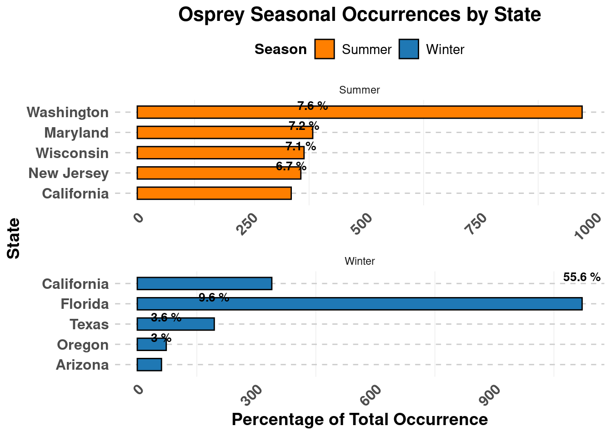
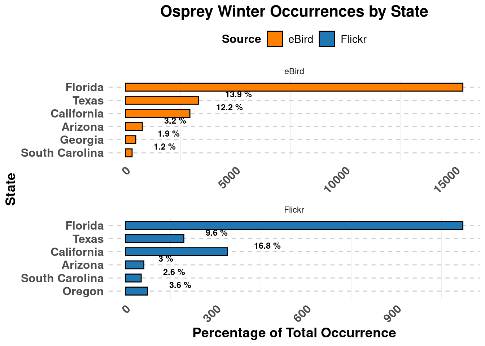
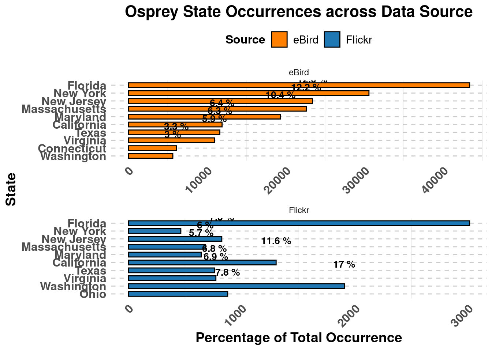
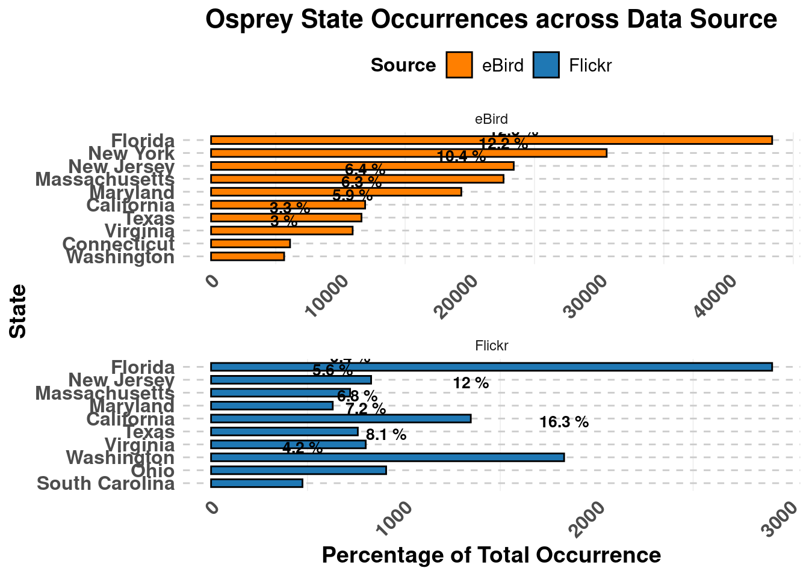

Crowdsourcing Osprey Occurrences and Migration Trends in the US Using Flickr Photos
GEO511
Author
Festus Adegbola
Published
November 30, 2024
Introduction
The Osprey (Pandion haliaetus) is a partial migratory bird species with a broad distribution across North America. Partial migration means that not all populations migrate, and the extent of migration depends on geographical location and environmental conditions. Ospreys breeding in northern latitudes (e.g., Canada and the northern United States) are typically obligate migrants, traveling to Central and South America for the winter. Those in southern parts of the United States may be year-round residents, depending on food availability and climate.
Monitoring bird populations and migration patterns is vital for understanding ecological dynamics and informing conservation efforts. However, traditional monitoring approaches, such as field observations and curated datasets like eBird, are often resource-intensive and may leave gaps in spatial and temporal coverage. As such, there is a growing need to explore complementary data sources that can fill these gaps.
This project investigates the potential of social media as an alternative data source for ecological monitoring by focusing on the seasonal occurrences and geographical distribution of Ospreys across the United States. Using geotagged Flickr photos and comparing them to formal bird observation data from eBird, the study aims to assess the extent to which trends in the presence and migration patterns of Ospreys captured through social media align with patterns documented in citizen science databases. By highlighting the utility of photo-based social media data, this project seeks to advance our understanding of how platforms like Flickr can contribute to ecological and avian studies, offering a scalable and accessible tool for biodiversity monitoring.
Materials and methods
#Datasets
The first step in the project is to download geotagged images of Ospreys from Flickr’s public API. This involve querying the “Osprey” tag to identify relevant photos. The query is also restricted to a specific timeframe to facilitate the analysis of seasonal patterns. Metadata associated with the photos, including geographic coordinates, date, and time of posting, were collected.
eBird data will be downloaded from the eBird data products website and processed in R. The occurrence and observation data will be accessed through eBird’s data portal, specifically focusing on Osprey sightings across the U.S. The dataset will include key variables such as location, and, date (aligned to match the timeframe of Flickr photo requests). This standardized dataset will enable direct comparisons with the Flickr data for temporal and spatial analysis.
#Installing and loading libraries
Let’s start by installing and loading the required R libraries:
Lake Solano--Pleasants Valley Rd. bridge (YOL Co.)
38.49
-122.03
2000-01-09
2000
1
Winter
Osprey
Pandion haliaetus
Florida
Indian River
Jaycee Beach Park
27.67
-80.36
2000-01-15
2000
1
Winter
Osprey
Pandion haliaetus
Florida
Monroe
Harry Harris County Park
25.02
-80.50
2000-01-16
2000
1
Winter
Osprey
Pandion haliaetus
Florida
Monroe
Lower Matecumbe Key
24.86
-80.71
2000-01-16
2000
1
Winter
Osprey
Pandion haliaetus
Florida
Monroe
No Name Key
24.70
-81.33
2000-01-16
2000
1
Winter
#Format Data
Code
#Extract month and year from the "datataken" column of Flickr dataOsprey$year <-format(Osprey$datetaken, "%Y")Osprey$month <-format(Osprey$datetaken, "%m")#Assign observations into seasons for FlickrOsprey$month <-as.numeric(Osprey$month)Osprey$season <-ifelse(Osprey$month %in%c(12,1, 2), "Winter",ifelse(Osprey$month %in%c(3, 4, 5), "Spring",ifelse(Osprey$month %in%c(6, 7, 8), "Summer", "Fall")))#Extract Month and Year for eBird dataebird$OBSERVATION.DATE <-as.Date(ebird$OBSERVATION.DATE)ebird$year <-format(ebird$OBSERVATION.DATE, "%Y")ebird$month <-format(ebird$OBSERVATION.DATE, "%m")#Assign observations into seasons for eBirdebird$month <-as.numeric(ebird$month)ebird$season <-ifelse(ebird$month %in%c(12,1, 2), "Winter",ifelse(ebird$month %in%c(3, 4, 5), "Spring",ifelse(ebird$month %in%c(6, 7, 8), "Summer", "Fall")))
Display Distribution of Ospreys using Flickr Photos
Create map to show the distributions of Osprey within the US using Flickr geotagged photos

#Assign States to Flickr Photos
Code
#Import Shapefile of the USus_states <-st_read("gadm41_USA_1.shp")# Create a spatial points dataframe from the 'flickr photos' dataframerobin_ss <-st_as_sf(Osprey, coords =c("longitude", "latitude"), crs =st_crs(us_states))# Perform a spatial join to determine the state for each pointOsprey_states <-st_join(robin_ss, us_states)#Assign state to Flickr observation from the new dataframeOsprey$state <- Osprey_states$NAME_1#remove all rows where state is NAs Osprey <- Osprey[!is.na(Osprey$state), ]
#Visualizing Seasonal Geodistribution of Ospreys’ Occurrences
Code
#Check the frequency of seasons summer_frequency <- Osprey %>%filter(season =="Summer") %>%count(state, name ="frequency") %>%arrange(desc(frequency))winter_frequency <- Osprey %>%filter(season =="Winter") %>%count(state, name ="frequency") %>%arrange(desc(frequency))#show them as percentage summer_sum <-sum(summer_frequency$frequency)winter_sum <-sum(winter_frequency$frequency)summer_frequency <-transform(summer_frequency, percent = frequency / summer_sum *100)winter_frequency <-transform(winter_frequency, percent = frequency / winter_sum *100)summer_frequency <-head(summer_frequency, n =5)winter_frequency <-head(winter_frequency, n =5)summer_frequency$season <-"Summer"winter_frequency$season <-"Winter"seasonal_occ <-rbind(summer_frequency, winter_frequency)seasonal_occ <- seasonal_occ %>%mutate(state =fct_reorder(state, -frequency))ggplot(seasonal_occ, aes(x =factor(state, levels =rev(unique(state))), y = frequency, fill = season)) +geom_bar(stat ="identity", position =position_dodge(width =0.8), width =0.6, color ="black") +geom_text(aes(label =paste(round(percent, 1), "%")), position =position_dodge(width =0.8), vjust =-2.5, size =3.5, color ="black", fontface ="bold") +labs(title ="Osprey Seasonal Occurrences by State",x ="State",y ="Percentage of Total Occurrence" ) +scale_fill_manual(values =c("Winter"="#1f78b4", "Summer"="#ff7f00"), labels =c("Summer", "Winter"), name ="Season" ) +theme_minimal() +theme(legend.position ="top",plot.title =element_text(size =16, face ="bold", hjust =0.5), axis.title.x =element_text(size =14, face ="bold"),axis.title.y =element_text(size =14, face ="bold"),axis.text.x =element_text(size =12, face ="bold", angle =45, hjust =1), axis.text.y =element_text(size =12, face ="bold"),legend.title =element_text(size =12, face ="bold"),legend.text =element_text(size =11),panel.grid.major.y =element_line(color ="gray80", linetype ="dashed"), panel.grid.major.x =element_blank() ) +facet_wrap(~ season, scales ="free", ncol =1) +coord_flip()

#Comparing Seasonal Geodistribution of Ospreys from Flickr to eBird
Code
#Check the frequency of seasons winter_frequency <- Osprey %>%filter(season =="Winter") %>%count(state, name ="frequency") %>%arrange(desc(frequency))winter_ebird <- ebird %>%filter(season =="Winter") %>%count(STATE, name ="frequency") %>%arrange(desc(frequency))winter_sum <-sum(winter_ebird$frequency)flickr_win_sum <-sum(winter_frequency$frequency)winter_ebird <-transform(winter_ebird, percent = frequency / winter_sum *100)winter_frequency <-transform(winter_frequency, percent = frequency / flickr_win_sum *100)winter_ebird <-head(winter_ebird, n =6)winter_frequency <-head(winter_frequency, n =6)winter_ebird$source <-"eBird"winter_frequency$source <-"Flickr"winter_ebird <- winter_ebird %>%rename(state = STATE) winter_occ <-rbind(winter_ebird, winter_frequency)winter_occ <- winter_occ %>%mutate(state =fct_reorder(state, -percent))ggplot(winter_occ, aes(x =factor(state, levels =rev(unique(state))), y = frequency, fill = source)) +geom_bar(stat ="identity", position =position_dodge(width =0.8), width =0.6, color ="black") +# Add border for barsgeom_text(aes(label =paste(round(percent, 1), "%")), position =position_dodge(width =0.8), vjust =-0.5, hjust =-0.99, size =3.1, color ="black", fontface ="bold") +labs(title ="Osprey Winter Occurrences by State",x ="State",y ="Percentage of Total Occurrence" ) +scale_fill_manual(values =c( "eBird"="#ff7f00", "Flickr"="#1f78b4" ), labels =c("eBird", "Flickr"), name ="Source" ) +theme_minimal() +theme(legend.position ="top",plot.title =element_text(size =16, face ="bold", hjust =0.5), axis.title.x =element_text(size =14, face ="bold"),axis.title.y =element_text(size =14, face ="bold"),axis.text.x =element_text(size =12, face ="bold", angle =45, hjust =1), axis.text.y =element_text(size =12, face ="bold"),legend.title =element_text(size =12, face ="bold"),legend.text =element_text(size =11),panel.grid.major.y =element_line(color ="gray80", linetype ="dashed"), panel.grid.major.x =element_blank() ) +facet_wrap(~ source, scales ="free", ncol =1) +coord_flip()

#Overall Seasonal Trend of Observations
Code
#Plot of seasonsseasons <- Osprey %>%group_by(season) %>%summarise(Count =n()) %>%arrange(factor(season, levels =c("Spring", "Summer", "Fall", "Winter")))season_sum <-sum(seasons$Count)seasons <-transform(seasons, percent = Count / season_sum *100) %>%arrange(factor(season, levels =c("Spring", "Summer", "Fall", "Winter")))#For ebird dataseasons_ebird <- ebird %>%group_by(season) %>%summarise(Count =n()) %>%arrange(factor(season, levels =c("Spring", "Summer", "Fall", "Winter")))ebird_season_sum <-sum(seasons_ebird$Count)seasons_ebird <-transform(seasons_ebird, percent = Count / ebird_season_sum *100) %>%arrange(factor(season, levels =c("Spring", "Summer", "Fall", "Winter")))seasons_ebird$source <-"eBird"seasons$source <-"Flickr"seasonal_trend <-rbind(seasons_ebird, seasons)ggplot(seasonal_trend, aes(x =factor(season, levels =c("Spring", "Summer", "Fall", "Winter")), y = percent, fill = source)) +geom_bar(stat ="identity", position =position_dodge(width =0.8), width =0.7) +geom_text(aes(label =paste(round(percent, 1), "%")), position =position_dodge(width =0.8), vjust =-0.3, size =4, color ="black", fontface ="bold") +# Title and axis labelslabs(title ="Osprey Seasonal Frequency across Data Sources",x ="Season",y ="Percentage of Total Events",fill ="Data Source" ) +scale_fill_manual(values =c("Flickr"="#1f78b4", "eBird"="#ff7f00")) +theme_minimal(base_size =12) +theme(plot.title =element_text(size =16, face ="bold", hjust =0.5),axis.title.x =element_text(size =14, face ="bold", margin =margin(t =10)),axis.title.y =element_text(size =14, face ="bold", margin =margin(r =10)),axis.text.x =element_text(size =12, angle =45, hjust =1, vjust =1),axis.text.y =element_text(size =12),legend.title =element_text(size =12, face ="bold"),legend.text =element_text(size =12),panel.grid.major.y =element_line(color ="gray80", linetype ="dashed"),panel.grid.minor =element_blank(),panel.grid.major.x =element_blank() )

#Overall GeoDistribution of Ospreys in the US comparing both datasets
Code
#State freqState_frequency <- Osprey %>%count(state, name ="frequency") %>%arrange(desc(frequency))#State freqState_ebird <- ebird %>%count(STATE, name ="frequency") %>%arrange(desc(frequency))State_ebird <-head(State_ebird, n =10)State_frequency <-head(State_frequency, n =10)ebird_state_sum <-sum(State_ebird$frequency)flickr_season_sum <-sum(State_frequency$frequency)State_ebird <-transform(State_ebird, percent = frequency/ ebird_state_sum *100) State_frequency <-transform(State_frequency, percent = frequency/ flickr_season_sum *100) State_ebird$source <-"eBird"State_frequency$source <-"Flickr"State_ebird <- State_ebird %>%rename(state = STATE) state_trend <-rbind(State_ebird, State_frequency)state_trend <- state_trend %>%mutate(state =fct_reorder(state, -percent))ggplot(state_trend, aes(x =factor(state, levels =rev(unique(state))), y = frequency, fill = source)) +geom_bar(stat ="identity", position =position_dodge(width =0.8), width =0.6, color ="black") +geom_text(aes(label =paste(round(percent, 1), "%")), position =position_dodge(width =0.8), vjust =-2.5, size =3.5, color ="black", fontface ="bold") +labs(title ="Osprey State Occurrences across Data Source",x ="State",y ="Percentage of Total Occurrence" ) +scale_fill_manual(values =c( "eBird"="#ff7f00", "Flickr"="#1f78b4" ), labels =c("eBird", "Flickr"), name ="Source" ) +theme_minimal() +theme(legend.position ="top",plot.title =element_text(size =16, face ="bold", hjust =0.5), axis.title.x =element_text(size =14, face ="bold"),axis.title.y =element_text(size =14, face ="bold"),axis.text.x =element_text(size =12, face ="bold", angle =45, hjust =1), axis.text.y =element_text(size =12, face ="bold"),legend.title =element_text(size =12, face ="bold"),legend.text =element_text(size =11),panel.grid.major.y =element_line(color ="gray80", linetype ="dashed"), panel.grid.major.x =element_blank() ) +facet_wrap(~ source, scales ="free", ncol =1) +coord_flip()

Results
The analysis of Flickr and eBird data reveals consistent trends in the seasonal distribution of Ospreys across the United States. Flickr photos indicate clear seasonal migration patterns, with Ospreys predominantly observed in northern states like New Jersey and Maryland during the summer months, followed by a shift to southern states such as Florida, California, Texas, Arizona, and North Carolina during the winter (Figure 2).
A closer examination of the winter distribution shows strong alignment between the two datasets. The top four states with the highest recorded Osprey occurrences during winter are identical in both Flickr and eBird data (Figure 3), highlighting a high level of correlation between the two sources.
Flickr and eBird data exhibit consistent trends in the seasonal distribution of Ospreys across the United States, spanning spring, summer, fall, and winter (Figure 4).Furthermore, when comparing the top ten states where Ospreys are observed year-round, nine of these states match between Flickr and eBird datasets (Figure 5).
Conclusions
The high degree of correlation between the two data sources, particularly in the top states for winter occurrences and year-round presence, highlights the reliability of photo-based citizen science data in reflecting species distribution patterns. These findings underscore the value of integrating alternative data sources like Flickr with traditional ecological datasets to enhance spatial and temporal coverage, offering a scalable approach to support conservation and monitoring efforts for migratory species like the Osprey.